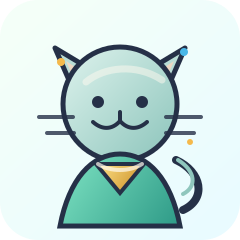

Prologue
ここは、余白を取り戻す小さな王国。
3年触れていない物は、ただの保管ではなく、未来を重くする執着かもしれません。けれど捨てることが目的ではありません。大切なものを選び直し、今日の自分に少し呼吸を戻すこと。それがこの冒険の目的です。
一番小さな場所から、決断力を起こす。
写真に残し、物から記録へ移す。
防災と片付けをつなげる。
Before / Afterで変化を受け取る。
人生のデトックスRPG
散らかった部屋に眠っているのは、不要な物だけではありません。忘れていた時間、気力、未来の余白。手放すたびに、それらを取り戻す冒険が始まります。
Concept Poster
ただ片付けるのではなく、物を手放すたびに自分の人生が軽くなる体験へ。AI執事、冒険者、案内ねこが、迷う瞬間を小さな決断に変えていきます。
AI執事の名言
3年触ってないなら、それは“保管”じゃなく“執着”ですぞ。Prologue
3年触れていない物は、ただの保管ではなく、未来を重くする執着かもしれません。けれど捨てることが目的ではありません。大切なものを選び直し、今日の自分に少し呼吸を戻すこと。それがこの冒険の目的です。
一番小さな場所から、決断力を起こす。
写真に残し、物から記録へ移す。
防災と片付けをつなげる。
Before / Afterで変化を受け取る。
主人公
最初の一歩を待っています。小さな整理が、未来の装備になります。
迷った時は、未来の自分が喜ぶかで選びましょう。
小さな勝利を積むほど、部屋も心も軽くなります。

売る、譲る、寄付する。手放し方にも冒険があります。
AI執事の名言
その服、あなたの未来に必要ですかな？